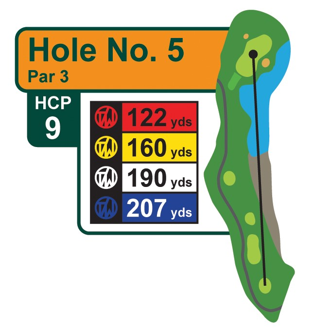
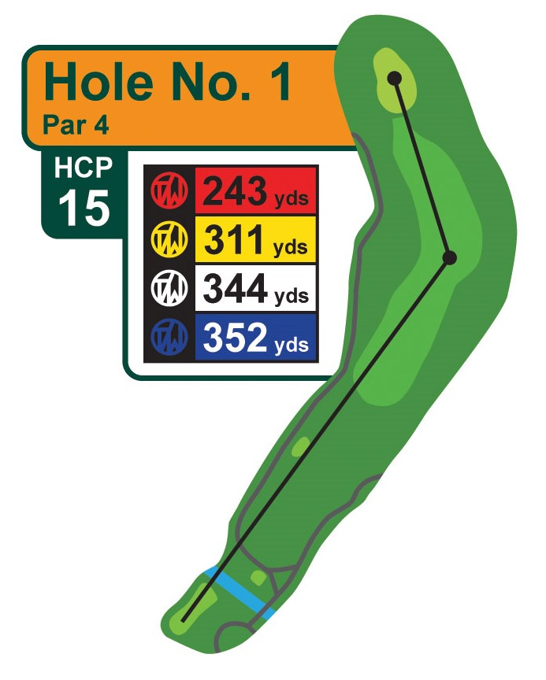
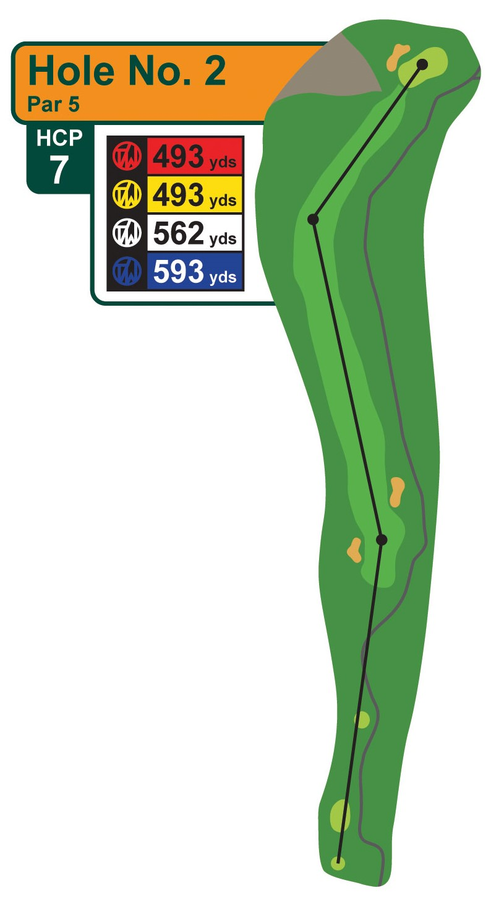
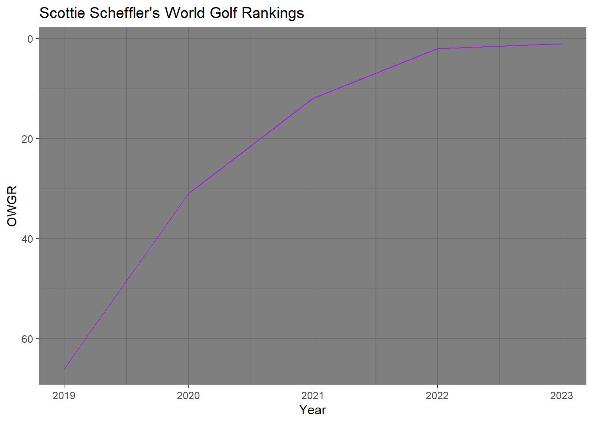

{kind=link}
library(tidyverse) #loads package
scheffler_2023 <- read_csv("scheffler_2023.csv") #loads dataPGA - Scheffler Greens in Regulation
Confidence Intervals
Binomial Tests
Comparing Two Proportions
Exploring Probability Confidence Intervals with Golf Data
Welcome video
Introduction
In this module, you will be exploring the concept of confidence intervals for proportions through the lens of golf. Specifically, you will be analyzing the 2023 greens in regulation data for Scottie Scheffler. Scottie Scheffler was the number 1 ranked golfer in the world and the PGA Tour Player of the Year in 2023.
NOTE: R is the name of the programming language itself and RStudio is a convenient interface. To throw even more lingo in, you may be accessing RStudio through a web-based version called Posit Cloud. But R is the programming language you are learning
Getting started: Scottie Scheffler Greens data
The first step to any analysis in R is to load necessary packages and data.
TIP: Packages are collections of functions that extend the capabilities of R. You can think of them as free apps you can download to your phone.
Running the following code will load the tidyverse and packages and the scheffler_2023 data we will be using in this lab.
TIP: As you follow along in the lab, you should run each corresponding code chunk in your .qmd document. To “Run” a code chunk, you can press the green “Play” button in the top right corner of the code chunk in your .qmd. You can also place your cursor anywhere in the lines of code you want to run and press “command + return” (Mac) or “Ctrl + Enter” (Windows).
TIP: Hashtags in R allows you to add comments to your code.
All data for the lab is from the PGA TOUR’s Website
Terms to know
Before proceeding with the analysis, let’s make sure we know some golf terminology that will help us putt-putt our way through this lab.
Are Greens in Regulation important to scoring? Check out the table below to see how greens in regulation and lower handicaps go hand and hand.
| Handicap | GIR % |
|---|---|
| 0 | 64% |
| 0-5 | 47% |
| 5-10 | 36% |
| 10-15 | 27% |
| 15-20 | 20% |
| 20-25 | 12% |
| 25-30 | 10% |
| 30+ | 6% |
Data Source: The Range by The Grint
A Par 3 hole should take 1 shot to reach the green in regulation 
A Par 4 hole should take 2 shots to reach the green in regulation 
A Par 5 hole should take 3 shots to reach the green in regulation  Images source: Tanglewood Golf Course, Public Domain
Lie Terminology
- The fairway is the short grass between the tee box and the green, where the ball is supposed to be hit on a par 4 or par 5 hole
- A bunker is a hazard filled with sand
- A fairway bunker is a bunker located in or next to the fairway
Variable descriptions
The scheffler_2023 data you’ll be analyzing in this lab provides approach data for Scottie Scheffler in 2023. The data includes the number of greens in regulation (GIR) hit by Scottie Scheffler, the number of holes he played, and the cut he hit from.
Variable Descriptions
| Variable | Description |
|---|---|
player |
PGA Tour player |
year |
PGA Tour Season |
greens |
Greens in Regulation Hit |
holes |
Number of Holes |
cut |
The type of ground that the approach shot to the green was hit from |
Viewing the data
We can use the glimpse() function to get a quick look at our scheffler_2023 data. The glimpse code provides the number of observations (Rows) and the number of variables (Columns) in the dataset. The “Rows” and “Columns” are referred to as the dimensions of the dataset. It also shows us the names of the variables (player, greens, holes …, cut) and the first few observations for each variable.
glimpse(scheffler_2023)Rows: 3
Columns: 5
$ player <chr> "Scottie Scheffler", "Scottie Scheffler", "Scottie Scheffler"
$ year <dbl> 2023, 2023, 2023
$ greens <dbl> 247, 657, 28
$ holes <dbl> 416, 760, 48
$ cut <chr> "Other", "Fairway", "Bunker"Another useful function to get a quick look at the data is the head() function. This function shows the first few rows of the dataset.
head(scheffler_2023)# A tibble: 3 × 5
player year greens holes cut
<chr> <dbl> <dbl> <dbl> <chr>
1 Scottie Scheffler 2023 247 416 Other
2 Scottie Scheffler 2023 657 760 Fairway
3 Scottie Scheffler 2023 28 48 Bunker
TIP: Type your answers to each exercise in the .qmd document.
Mutating Data
- Mutating data in R is the process of creating new variables based on existing variables in a dataset. This can be done using the
mutate()function in thedplyrpackage. - The mutate function takes a data frame as its first argument and then a series of new variable assignments. (Eg:
mutate(data, new_var1 = old_var * 2, new_var = old_var1 - old_var2))
Arranging Data
- The
arrange()function in thedplyrpackage is used to sort the data frame by one or more variables. - The
arrange()function takes a data frame as its first argument and then a series of variables to sort by. (Eg:arrange(data, variable1, variable2)) - By default, the
arrange()function sorts in ascending order. To sort in descending order, you can use thedesc()function inside thearrange()function. (Eg:arrange(data, desc(variable1)))
HINT: Values can be assigned to variable names in R using the <- operator. For example, x <- 2, y <- "Hello", or z <- 2 * x.
Using = also works in R for assigning values to variables, but it is common practice to use <- for this purpose.
Confidence Intervals for Proportions
A confidence interval for a proportion is a range of values that is likely to contain the true value of the population proportion with a certain level of confidence. Confidence intervals for proportions can be used for a variety of purposes, including:
Quantifying the precision of our estimates. The wider the confidence interval, the less precise our estimate is, the narrower the confidence interval, the more precise our estimate is.
Making inferences about the population proportion. For example, if a 90% confidence interval was used, it could be said that if the same population was sampled on numerous occasions and interval estimates were made on each occasion, approximately 90% of the intervals would contain the population parameter.
Testing hypothesized values of the population proportion. If the hypothesized value is not within the confidence interval, then we have reason to believe that it is not the true population proportion.
Comparing two proportions. If the confidence intervals for two sample proportions do not overlap, then we have reason to believe that the two true population proportions are different.
Making Confidence Intervals in R
The statistical notation for a confidence interval for a proportion is:
\[ \hat{p} \pm z \times \sqrt{\frac{\hat{p}(1-\hat{p})}{n}} \]
Where:
- \(\hat{p}\) is the sample proportion.
- \(z\) is the z-score that corresponds to the desired level of confidence
- \(n\) is the sample size
TIP: The z-score for a 95% confidence interval is approximately 1.96. You can use this value to calculate the confidence interval for the proportion of greens hit in regulation by Scottie Scheffler from the fairway.
Some common Confidence Intervals and their corresponding z-scores are:
| Confidence Interval | Z-Score |
|---|---|
| 90 % | 1.65 |
| 95 % | 1.96 |
| 98 % | 2.33 |
| 99 % | 2.58 |
In R you can perform basic math using the * operator for multiplication and the \ operator for division.
For a quick example if the proportion of success for a problem is .6, the sample size is 100, and the test is being performed at the 95% confidence level, then the confidence interval for the proportion of success can be calculated as follows:
lower_limit <- .6 - 1.96 * sqrt((.6 * (1-.6))/100)
upper_limit <- .6 + 1.96 * sqrt((.6 * (1-.6))/100)This would give you the lower limit (0.50398) and the upper limit (0.69602) of the 95% confidence interval for the true proportion of success.
Using prop.test to Calculate Confidence Intervals
In R the prop.test() function can be used to calculate confidence intervals for proportions. The prop.test() function takes the number of successes and the total number of trials as arguments and returns a confidence interval for the proportion.
TIP: You can type ?prop.test in the R console to get more information about the prop.test() function, including which arguments it takes and what it returns.
TIP: Throughout this lesson, we will set the correct argument to FALSE in the prop.test() function. This is because the correct argument is used to apply a continuity correction to the confidence interval, which we will not be using in this lesson.
Below is an example of how to use the prop.test() function to calculate a 95% confidence interval for data where the number of successes is 60 and the total number of trials is 100. If $conf.int is added to the end of the prop.test() function, the function will return only the confidence interval and confidence level.
prop.test(60, 100, conf.level = .95, correct = FALSE)
1-sample proportions test without continuity correction
data: 60 out of 100, null probability 0.5
X-squared = 4, df = 1, p-value = 0.0455
alternative hypothesis: true p is not equal to 0.5
95 percent confidence interval:
0.5020026 0.6905987
sample estimates:
p
0.6 prop.test(60, 100, conf.level = .95, correct = FALSE)$conf.int[1] 0.5020026 0.6905987
attr(,"conf.level")
[1] 0.95TIP: The $ operator is used to access a specific element of a list in R. In this case, the conf.int element of the list returned by the prop.test() function contains the confidence interval.
Testing Hypothesized Proportions
Setting Up Hypotheses
In hypothesis testing for proportions, a null hypothesis is set up to test a claim about a population proportion. The null hypothesis is that the population proportion is equal to a specific value. The alternative hypothesis can be that the population proportion is not equal to the specific value, greater than the specific value, or less than the specific value.
The options are shown below:
NOTE: It is common practice to denote a null hypothesis with \(H_0\) and an alternative hypothesis with \(H_A\). Sometime the alternative hypothesis is denoted with \(H_1\).
\(H_0: p = p_0\)
and
\(H_A: p \neq p_0\) or
\(H_A: p > p_0\) or
\(H_A: p < p_0\)
Where \(p_0\) is the hypothesized value of the population proportion and \(p\) is the true population proportion.
Significance Level
For hypothesis testing, a significance level is set to determine the probability of rejecting the null hypothesis when it is true. The significance level is denoted by \(\alpha\) and is often set to 0.05. This means that there is a 5% chance of rejecting the null hypothesis when it is actually true. Other common significance levels are 0.01 and 0.10.
Calculating the Test Statistic
A test statistic is a value calculated from the sample data that is used to determine whether the null hypothesis should be rejected or not.
The test statistic for hypothesis testing for proportions is:
\[z = \frac{\hat{p} - p_0}{\sqrt{\frac{p_0(1 - p_0)}{n}}}\]
Where \(\hat{p}\) is the sample proportion, \(p_0\) is the hypothesized value of the population proportion, and \(n\) is the sample size.
Determining the Significance of the Test
There are two common ways to determine the significance of the test:
Compare the test statistic to the critical value
Compare the p-value to the significance level
The first method compares the test statistic to the critical value. The critical value is the value that separates the rejection region from the non-rejection region. If the test statistic is in the rejection region, the null hypothesis is rejected. This also corresponds to the confidence intervals given for true probability of success. If the hypothesized value of the population proportion is within the confidence interval, the null hypothesis is not rejected. If it is outside the confidence interval, the null hypothesis is rejected.
TIP: Critical values can be found very easily in R using the qnorm() function. For example, qnorm(.975) will return the critical value for a 95% confidence interval (two sided test).
If the test is right-tailed (greater than), the critical value is found using qnorm(.95) for a 95% confidence interval. If the test is left-tailed (less than), the critical value is found using qnorm(.05) for a 95% confidence interval.
The p-value is the most common way to determine the significance of the test. The p-value is the probability of observing a test statistic as extreme as the one calculated from the sample data, assuming the null hypothesis is true. If the p-value is less than the significance level, the null hypothesis is rejected.
Hypothesis Testing in R
Hypothesis testing for proportions can also be done in R using the prop.test() function. Seen below is an example where it is being tested if the true proportion of successes is different than .7. The first test shows the results if the sample proportion had 60 out of 100 successes and the second test shows the results if the sample proportion had 70 out of 100 successes. Both tests are done using an \(\alpha\) level of 0.05.
prop.test(60, 100, p = .7, conf.level = .95, correct = FALSE)
1-sample proportions test without continuity correction
data: 60 out of 100, null probability 0.7
X-squared = 4.7619, df = 1, p-value = 0.0291
alternative hypothesis: true p is not equal to 0.7
95 percent confidence interval:
0.5020026 0.6905987
sample estimates:
p
0.6 prop.test(70, 100, p = .7, conf.level = .95, correct = FALSE)
1-sample proportions test without continuity correction
data: 70 out of 100, null probability 0.7
X-squared = 4.2073e-31, df = 1, p-value = 1
alternative hypothesis: true p is not equal to 0.7
95 percent confidence interval:
0.6041515 0.7810511
sample estimates:
p
0.7 The test statistic is returned in the output of prop.test() as X-squared. This is the square of the z-value. For the first test the test statistic is 2.182, and for the second test the test statistic is 0. For a 95% confidence level for a two-sided test, the critical value is 1.96. If the test statistic is greater than 1.96 or less than -1.96, the null hypothesis is rejected. Since the test statistic for the first test is less than -1.96, the null hypothesis is rejected. Since the test statistic for the second test is between -1.96 and 1.96, the null hypothesis is not rejected.
The p-value of the test is returned in the output of the prop.test() function. For the first test, the p-value is 0.029 and for the second test, the p-value is 1. Since the p-value of the first test is less than the significance level of 0.05, the null hypothesis is rejected. Since the p-value for the second test is greater than the significance level of 0.05, we fail to reject the null hypothesis.
Drawing Conclusions
If the null hypothesis is rejected we can conclude that the sample data provides enough evidence to support the alternative hypothesis. If the null hypothesis was that the population proportion is equal to .7 and the alternative hypothesis was that the population proportion is not equal to .7 and \(\alpha = 0.5\), then we might say,
“There is significant evidence to suggest that the true population proportion is not equal to .7 at the 95% confidence level.”
If the null hypothesis is not rejected we do not automatically accept the null hypothesis. We simply do not have enough evidence to reject it. For example if the null hypothesis was that the population proportion is equal to .7 and the alternative hypothesis was that the population proportion is not equal to .7 and \(\alpha = .05\), then we might say,
There is not enough evidence to suggest that the true population proportion is different from .7 at the 95% confidence level.”
Example
Suppose you are watching a golf tournament on TV and Scottie Scheffler is about to hit an approach shot from the fairway. You hear the announcer say that Scottie Scheffler hits 3/4 of his greens in regulation from the fairway. You are skeptical of this claim and decide to test it against the data you have collected at the 95% confidence level.
You set up a hypothesis test with the following hypotheses:
Null Hypothesis \(H_0\): The proportion of greens hit in regulation by Scottie Scheffler from the fairway is 0.75.
Alternative Hypothesis \(H_A\): The proportion of greens hit in regulation by Scottie Scheffler from the fairway is not 0.75.
Comparing Two Proportions
Sometimes, comparing two sample proportions is necessary to determine if they are significantly different. This can be done with a two sample z-test for equality of proportions.
The null hypothesis for a two sample z-test for equality of proportions is that the two proportions are equal.
\(H_0: p_1 = p_2\)
The alternative hypothesis can be that the two proportions are not equal.
\(H_A: p_1 \neq p_2\)
That the first proportion is greater than the second proportion.
\(H_A: p_1 > p_2\)
or that the first proportion is less than the second proportion.
\(H_A: p_1 < p_2\)
The test-statistic for the two sample z-test for equality of proportions is calculated as:
\[Z = \frac{\hat{p}_1 - \hat{p}_2}{\sqrt{\hat{p}(1-\hat{p})\left(\frac{1}{n_1} + \frac{1}{n_2}\right)}}\]
where
\(\hat{p}_1\) and \(\hat{p}_2\) are the sample proportions for the two samples,
\(\hat{p}\) is the pooled proportion,
\(n_1\) and \(n_2\) are the sample sizes for the two samples.
The pooled proportion is calculated as:
\[\hat{p} = \frac{x_1 + x_2}{n_1 + n_2}\]
Once again the prop.test() function in R can help us out. The prop.test() function can the number of successes and the total number of trials for each sample as arguments and return a p-value for the comparison. Use the argument correct = FALSE in the function to get the correct results. Remember that the prop.test() function will list the test statistic as an X-squared value, which is the square of the z-score. The p-value stays the same as listed in the output.
TIP:Use the ?prop.test command in the R console to get more information about the prop.test() function, including which arguments it takes and what it returns.
NOTE: prop.test can take the form prop.test(c(x1, x2), c(n1, n2)) where x1 and x2 are the number of successes in each sample and n1 and n2 are the total number of trials in each sample.
Below is an example of how the prop.test() function could be used to compare two proportions (10/100 and 20/100) at the 95% confidence level with a two-sided alternative hypothesis:
NOTE: If we were using the test statistic to compare the critical value, we would have to take the square root of the X-squared value to get the z-score (the z-Score is our test statistic).
sqrt(3.9216)[1] 1.980303The z-score would then be compared to the critical value for the desired confidence level. Since we know that the critical values for a two-sided test at the 95% confidence level are -1.96 and 1.96, we can see that the z-score of \(\pm 1.98\) falls in the rejection region.
prop.test(c(10, 20), c(100, 100),
conf.level = 0.95,
alternative = 'two.sided',
correct = FALSE)
2-sample test for equality of proportions without continuity correction
data: c(10, 20) out of c(100, 100)
X-squared = 3.9216, df = 1, p-value = 0.04767
alternative hypothesis: two.sided
95 percent confidence interval:
-0.197998199 -0.002001801
sample estimates:
prop 1 prop 2
0.1 0.2 The prop.test() function returns a p-value for the comparison, which in this case is .048. Since this value is less than our \(\alpha\) of .05, we would reject the null hypothesis that the two proportions are equal and conclude that there is enough evidence to suggest that the two true proportions are different.
Learn about rules about hitting out of the bunkers in golf in the video below:
TIP: The alternative hypothesis can be set to 'greater', 'less', or 'two.sided' using the alternative argument in the prop.test() function.
TIP: Remember that the test statistic is z which is the square root of the X-squared value output by the prop.test() function.
More Practice
Rory McIlroy is one of the most popular and best golfers on the PGA Tour. He has won multiple major championships. He is known for his long drives and his picturesque swing.

Image Source: TourProGolfClubs, CC BY 2.0, via Wikimedia Commons
{kind=link}
HINT: Read in the data and create a McIlroy 2023 dataset with the code below:
pga_girs <- read.csv("pga_girs.csv")
mcilroy_2023 <- filter(pga_girs, player == "Rory McIlroy", year == 2023)Below is a graph of Scottie Scheffler’s rapid climb up the world golf rankings from the end of 2019 to the end of 2023.

HINT: Use the code below to filter the data:
top_bunker_players <- pga_girs |>
filter(cut == "Bunker", holes < 25, year == 2023) |>
mutate(gir = greens / holes) |>
arrange(desc(gir)) |>
slice(1, n())